Chapter 6 Priority Sectors
6.1 Agriculture and Livestock
(From Second National Communication Draft)
6.1.1 Agriculture
Agriculture is considered to be the basis for Mozambique’s development. This sector is made up of small, medium and large producers. The most predominant class is smallholders who use approximately 97% of the approximately five million arable land currently used for agriculture (Mozambique Government - PAPA, 2008).
In 2010, agriculture contributed 23% to the Gross Domestic Product (INE). Furthermore, 80% of the country’s active population is employed in the agrarian sector. Thus, this sector is fundamental for poverty reduction and income generation for rural families, since most of this population depends on agriculture for food, employment and income.
A critical factor in agricultural production is access to and distribution of water throughout the vegetative cycle of crops. Production and productivity levels are affected by changes in climatic parameters, in particular variations in rainfall, given that around 98% of farmers practice rainfed agriculture (CAP, 1999-2000).
According to the rainy season balance sheets, the agriculture sector is vulnerable to drought and drought events, floods and inundations, strong winds, tropical cyclones including pests (see Table 3.3). These events result in crop areas affected and/or lost; death and/or disappearance of domestic animals, especially cattle, goats, pigs, sheep and poultry; destruction of agricultural and animal management infrastructures; loss of pasture areas, affecting farmers and their families.
Table 3.3: Impact of climate change on agriculture
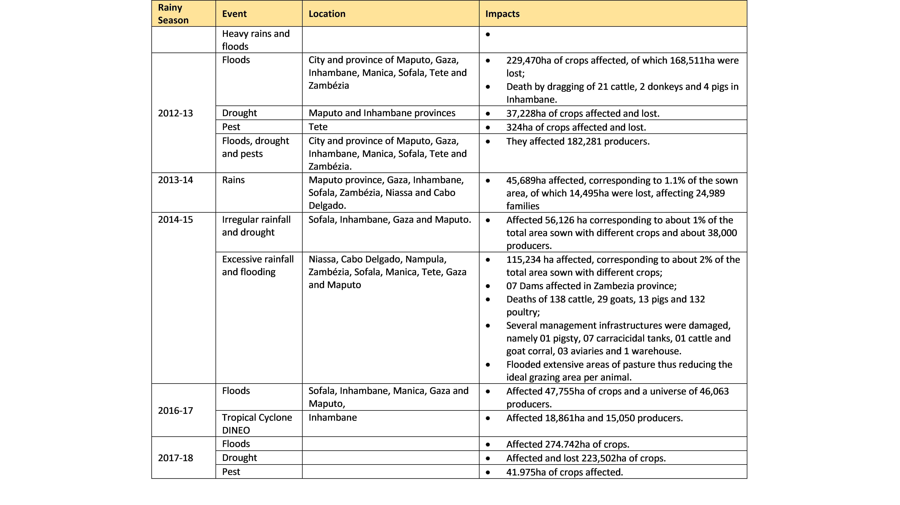
Source: Balances of the rainy seasons for the period 2011-12 to 2017-18
Weather events in the country between the rainy seasons from 2011-12 to 2017-18 affected around 1,384,677 ha of crops, of which around 733,270 ha were lost. The events that affected the largest area of crops were the tropical depression Dando and the tropical cyclone Funso, which occurred in the 2011-12 rainy season, while the greatest loss of crops occurred following the floods of 2012-2013.
The events that cause most loss and destruction in the agricultural sector are those related to excessive rainfall and floods and tropical cyclones. However, when a drought occurs, usually the area affected equals the area lost.
It is also important to stress that in addition to the biophysical vulnerability associated with the occurrence of extreme weather events, the levels of technology adopted by most producers do not correspond to the requirements of the selected varieties, due to the weak financial capacity to purchase agricultural inputs, which also contributes to low production and productivity.
For the assessment of the vulnerability of the agricultural sector to climate change, the maize crop produced in rainfed areas in the district of Chókwé, Gaza province, was selected. The assessment consisted in the analysis of the relationship between crop yield and climate variables (precipitation and temperature) and the projection of climate variables and their possible impacts on yields.
- Justification for the choice of maize crop and study area
In Mozambique, cereals occupy the largest cultivated area, about 1.8 million hectares, or 47% of the total cultivated area. Maize is the most produced food crop in the country, occupying about 1.3 million hectares, or 72% of the total area under cereals. Maize provides products used for human and animal food and raw material for industry. This cereal is cultivated by about 79% of small and medium farms in a rainfed agriculture environment.
In the country, maize production per unit area does not yet translate the genetic potential of the materials recommended by research, despite its great importance, the progressive evolution of the quantities produced and yields obtained. According to IIAM (2012), the critical yields of maize depend on the production system practiced, namely: (i) irrigated systems with two values, being 2,500 Kg/ha in systems in which there is medium use of inputs and 1,875 Kg/ha in those of low use of inputs; (ii) 595.63 Kg/ha in rain-fed. Maize production under rainfed conditions experiences uncertainties due to the irregularity of rainfall both related to variations in the beginning and end of the rainy season and the distribution of rainfall during the rainy season. In addition, there are high temperatures and high levels of evapotranspiration.
Although the vulnerability of the agricultural sector to climate change is felt in many districts of the country, Chókwé district was selected as the study area for the following reasons:
Presence of an operational meteorological station that gathers sufficient data for this work;
Existence of favourable agro-ecological conditions for the practice of agriculture;
Chókwé is one of the priority districts identified in the Food Production Action Plan (PAPA) for maize production;
Around 80% of the district’s population practices rainfed agriculture in which the predominant crop is corn, and also has agriculture as its main economic activity.
The District’s climate is dry tropical, with an average annual temperature of 24˚C; the average annual rainfall is between 500 to 800mm, confirming the gradient from the coast to the interior, while the reference potential evapotranspiration (ETo) is of the order of 1,400 to 1,500mm; and, the average annual relative humidity is between 60 to 65% (MITADER, 2017).
Low rainfall is combined with high temperatures, resulting in an accentuated water shortage. The irregularity of the rain causes frequent droughts even in the rainy season (MITADER, 2017). In the agriculture sector, the number of households that practice this climate-resilient activity has been doubling since 2012, as a result of the expansion of extension services and the dissemination of good agricultural practices, within the scope of the implementation of projects and programs by the Government and its partners.
MAE (2005) indicates that the total area cultivated by the family sector, in the District of Chókwé, is 10,000 hectares which represents 5% of the total area of the district, agriculture is practiced on family farms with an average of 1.5 hectares, in a system of intercropping, in some regions of the district the crops are made using animal traction and tractors.
Relevant climatic variables for maize production
Temperature
Different plant species and varieties have different temperature requirements throughout the vegetative cycle. According to Malate (2015), some ideal conditions of the development cycle of maize are:
Germination and emergence - To ensure good emergence, soil temperature should be above 10°C and temperatures between 25 and 30°C provide better conditions for seed germination and seedling emergence;
Growth and development phase - air temperature should be around 25°C and be associated with good soil water availability;
Flowering and maturation - Average daily temperatures above 26°C can promote the acceleration of flowering and maturation, while temperatures below 15.5°C can delay them.
In order to reduce maize losses during harvest, it is necessary that this occurs in a predominantly dry period. The presence of organic residues on the soil is favorable in regions with excessively high temperatures, for example, tropical areas, in the hot season, as the residues help to conserve soil moisture and protect it from wind and water erosion (Costa, 1995).
Precipitation
Precipitation, associated with soil fertility, determines the productivity of rainfed crops. In order to avoid water and nutritional deficiencies in the plant, the soil water flow density must be equal to or greater than the maximum transpiration of the crop, which is mainly dependent on climatic conditions (Fancelli et al. 2000).
Maize, despite being drought tolerant, needs water to maximize yield, especially in the critical period. The most critical phases of water deficiency are emergence, flowering and seeding. Maize requires a minimum of 350-500mm of well-distributed summer rainfall during the crop cycle to yield without the need to use irrigation (Malate, 2015).
The sowing time, in general, is determined by the variation in temperature and rainfall distribution. However, it is not easy to recommend the planting date to rain-dependent farmers, given the uncertainties of rainfall associated with climate change.
Methodology
For the analysis of maize yield data the AgroMetshell software was used. This program requires historical data, for a minimum period of 30 years, of precipitation, potential evapotranspiration, sowing decades, soil type, retention capacity, and crop cycle to determine yields and to know the relationship between precipitation and yields. For scenario design, i.e. projection of temperature data (maximum and minimum) and daily precipitation for a 20-year period, LARS-WG software and the HADCM3 model were used.
- Analysis of the current situation
The average yields obtained in the maize crop, in the District of Chókwè, in the period between 1995 and 2010 are far below the potential. In most agricultural campaigns, yields ranged from 0.2 to 0.3 ton/ha, while the potential dryland yield in the District is 1 ton/ha. Generally, sowings carried out in December/January result in very low yields and production failure.
The Crop Water Satisfaction Index (ISHC), which establishes the relationship between the availability of water in the soil and the amount of water that the crop needs for its development throughout the cycle was below 60%, i.e. the recorded precipitation throughout the agricultural season was not sufficient for crop water satisfaction, which ranges from 400-800 mm throughout the crop cycle. In the 1998-99 agricultural season, one of the best campaigns, the index was approximately 80%, with a yield of 0.4ton/ha.
To calculate the ISHC, it was taken into account rainfall data recorded throughout the campaigns, the normal rainfall of the District, potential evapotranspiration, sowing dates, varieties used, soil type and its retention capacity. The relative yield is obtained through a relationship with the ISHC.
During the vegetative and flowering stage, the Crop’s Water Requirements (NHC) are high and decrease in the last stage, that is, in the stage of maturation and cob formation. In the initial stage of the crop, water requirements grow until the vegetative stage (figure 3.3).
The amount of water available for the crop depends on the depth explored by the roots, the soil water storage capacity and the plant root density. Thus, the rational management of soil and crop is of great importance for the growth and distribution of the root system, favoring the efficient use of water in the production process.
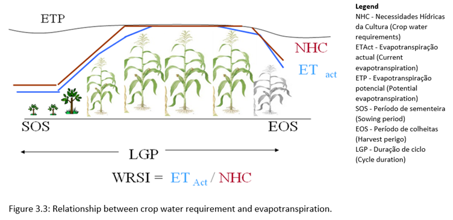
Precipitation varies throughout the year, and the significant one occurs between the months of November and April. The best sowing period, based on rainfall data, is from November onwards, although its distribution over that period is irregular.
Projection of temperature and precipitation until 2030
Average annual temperatures for the district of Chókwé in recent years have varied between 22-260C. However, projections of the minimum temperature for the period 2011 - 2030 indicate that it will be between 18.5-18.8°C; the maximum between 30.7-31.3°C and the average annual temperature will be 24.8°C, increasing by 0.8°C from the current 24°C (Figure 3.4).
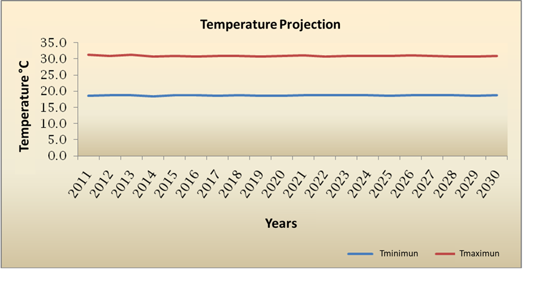
Figure 3.4: Minimum and maximum temperature projected for the period 2011-2030
The accumulated annual precipitation in the district of Chókwè varies between 500-800 mm. In the period between 2011 and 2030, the accumulated precipitation will be between 420-1.218 mm, with the occurrence of extreme events (such as heavy rains in 2014) and rainfall shortages in 2024 (Figure 3.5).
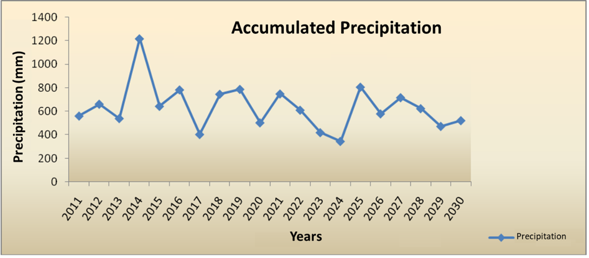
Figure 3.5: Projected accumulated precipitation for the period 2011-2030.
Results
- At the level of analyzed data
The low yields obtained in the maize crop, between 0.2-0.3 ton/ha, are directly related to the distribution and spatial variation of rainfall, sowing date, agricultural practices and low use of agricultural inputs;
Irregular or scarce rainfall at critical stages of the crop (vegetative and flowering phases) results in losses, failure or very low yields.
- At the level of projections
Maize yields in the next 20 years may decline if adequate adaptation measures are not implemented, due to the expected reduction in accumulated annual precipitation and a predicted increase in the maximum temperature of around 5°C, from the current 26°C to 31°C.
6.1.2 Livestock
Livestock plays a vital role for the rural population, it is one of the components of agriculture. The contribution of livestock to the national economy is incipient. In 2008, livestock represented 10% of total agricultural production and contributed only 1.7% to the Gross Domestic Product (OIE Report, 2008). However, animal production is affected by climate change in food quantity and quality, disease distribution, management practices and production systems (Herrero et al. 2009).
The main constraints to the development of livestock production are as follows:
Low productivity of existing herds due to the genetic quality of breeding stock and inadequate management practices;
Weak veterinary assistance network for the family sector;
Lack of infrastructure for watering and managing livestock.
PEDSA identifies drought as one of the environmental factors causing a notable loss of productivity and the use of technologies to improve water availability and management as a key element to improve livestock production. For example, in 2015, 6,767 cattle and 112 goats died nationwide due to drought.
In semi-arid regions, livestock production is a way for farmers to adapt to climate change, as animals are relatively less affected. However, several aspects of livestock production are affected by climate change, including feed quantity and quality, disease distribution, management practices and production systems (Herrero et al. 2009). Therefore, to achieve the above Government objectives, investment is needed to address any constraints to livestock productivity, including climate change.
The vulnerability and adaptation of pastures and livestock are matters of great concern in developing countries such as Mozambique, due to the great importance of livestock as a livelihood component and source of income for local communities. The objectives of this sub-chapter are:
Assess the expected impacts and vulnerability of pasture and livestock to climate change;
Identify adaptation programmes and measures;
Identify gaps, needs and priorities for climate change education, training and public awareness.
It should be noted that the impacts of extreme climate events on livestock are already a reality in the country, as illustrated in Table 3.4. The observed impacts range from the loss of animals through death to the destruction of livestock management infrastructures, including the loss of pasture areas.
Table 3.4: Impacts of extreme events on livestock

Vulnerability assessment of the pasture and livestock sector
For the vulnerability assessment the Limpopo River Basin in Mozambique was selected. This is located between latitudes 21o00’S and 25o00’S and longitudes 31o00’E and 35o00’E. It has an area of 79,800km² (Figure 3.6). This area was selected due to the variety of climates that occur in it (wetter on the coast and drier inland), the high fish potential and the long tradition of raising cattle, the animal species chosen for the analyses.
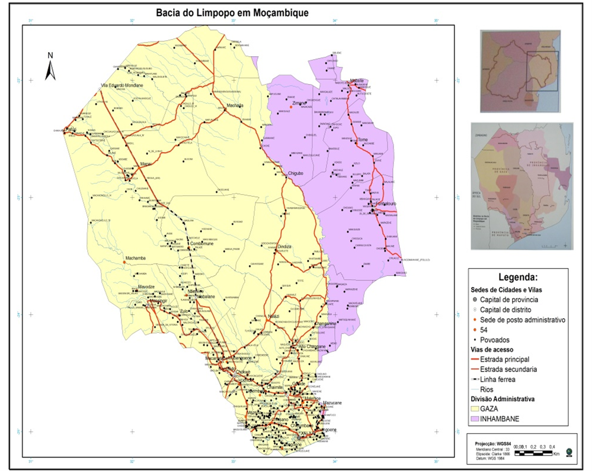
Figure 3.6: Location of study area, Limpopo River basin.
Climate and water availability
In the Limpopo River Basin the climate is characterized by two seasons: a warm and wet season, from October to March, and a cool and dry season, from April to September. Of the total annual rainfall, 76-84% is recorded during the hot and wet season (Reddy, 1986). The maximum temperatures range from 30-35°C and the minimum from 9-12°C. The observed evaporation and evapotranspiration in mean annual values are higher on the coast than inland, between 2300 -1,700mm, the average relative humidity varies from 75-65% (UGBL, 2011). The main rivers are the Limpopo, the Rio dos Elefantes, Changane and the Mwenezi. There are numerous lakes and swamps and vast wetlands.
Vegetation cover
Three major vegetation formation groups occur in the Limpopo basin (Table 3.5). Most of the area of this basin is suitable for pasture (Figure 3.7).
Table 3.5: Main vegetation formation groups in the study area
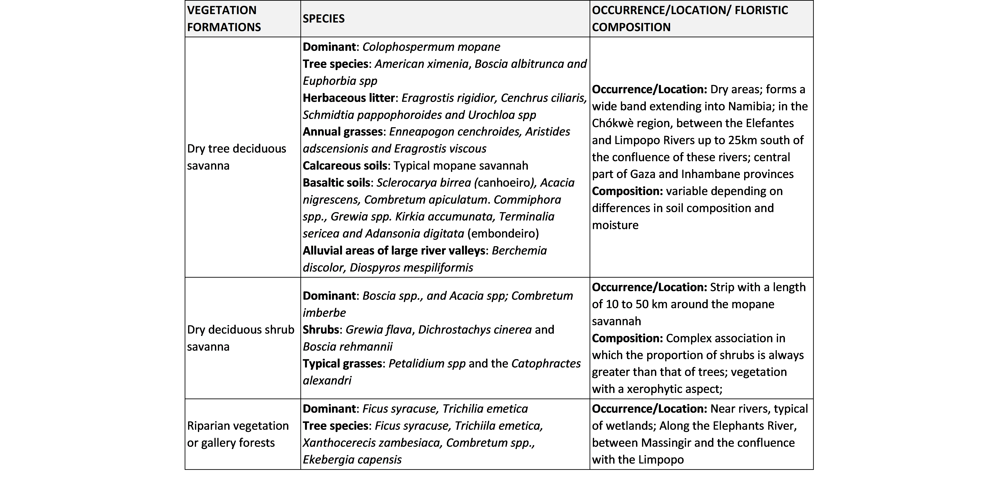
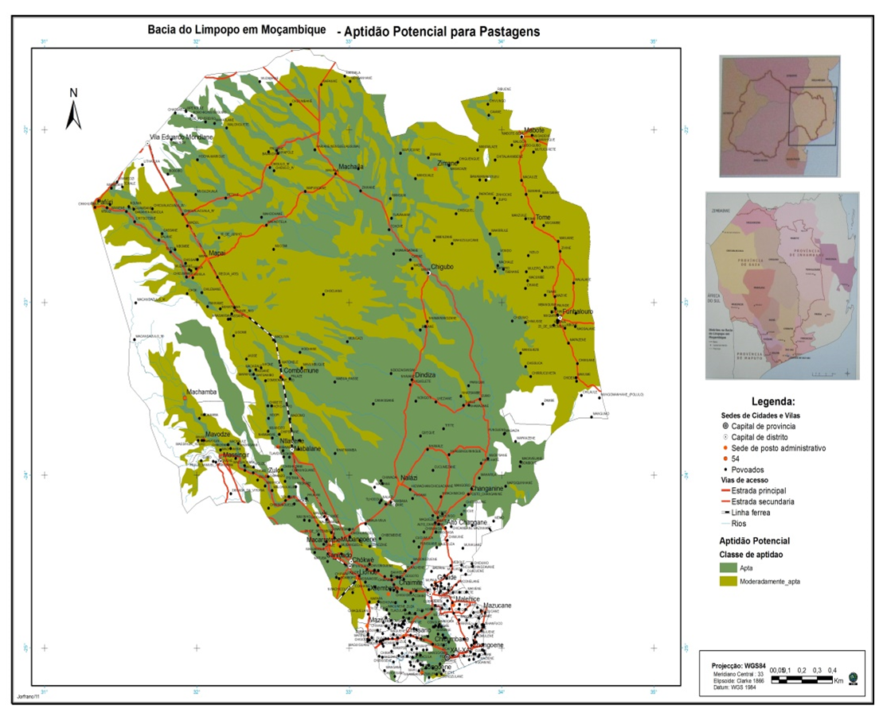
Figure 3.7: Potential suitability for pastures
Vulnerability assessment methods
The process of assessing the vulnerability of natural pastures and livestock is qualitative and was based on a literature review, and followed four steps:
The first step was to identify data and information regarding the available projections on climate change in Mozambique produced by INGC (2009) for 2040-2060 and 2080-2100. Projections indicate that temperature and evapotranspiration will increase and rainfall will be more variable. As a result, drought periods will be hotter and longer and rainfall more unpredictable (INGC 2009).
As a second step, the relationship between natural pastures, cattle ranching and climate change was analyzed. Climate change can alter the productivity of pastures and therefore cause livestock production to vary. The impact on pasture productivity results from increased CO2-atmospheric concentration, change in temperature regime and precipitation. Livestock production, especially small-scale production that depends on rainfall, will be substantially negatively affected. For example, in the prolonged drought in Mozambique in 2015, a large number of cattle died due to the drought and consequent shortage of pasture and water for drinking.
The third step consisted of collecting and evaluating data and information on the initial conditions considered in the analysis of vulnerability to climate in the near future. The baseline scenario variables include forage and water availability and quality, natural pasture and cattle management, as well as the socioeconomic situation of the local human population. These aspects are closely interlinked and are affected differently in the event of a significant change in climatic conditions.
- Forage availability
Natural pastures are the main source of food for cattle. Its geographic distribution is fundamentally determined by climatic factors and physical and chemical properties of the soil. Forage availability is high during the rainy season and declines as the dry season progresses (Fig 3.8).
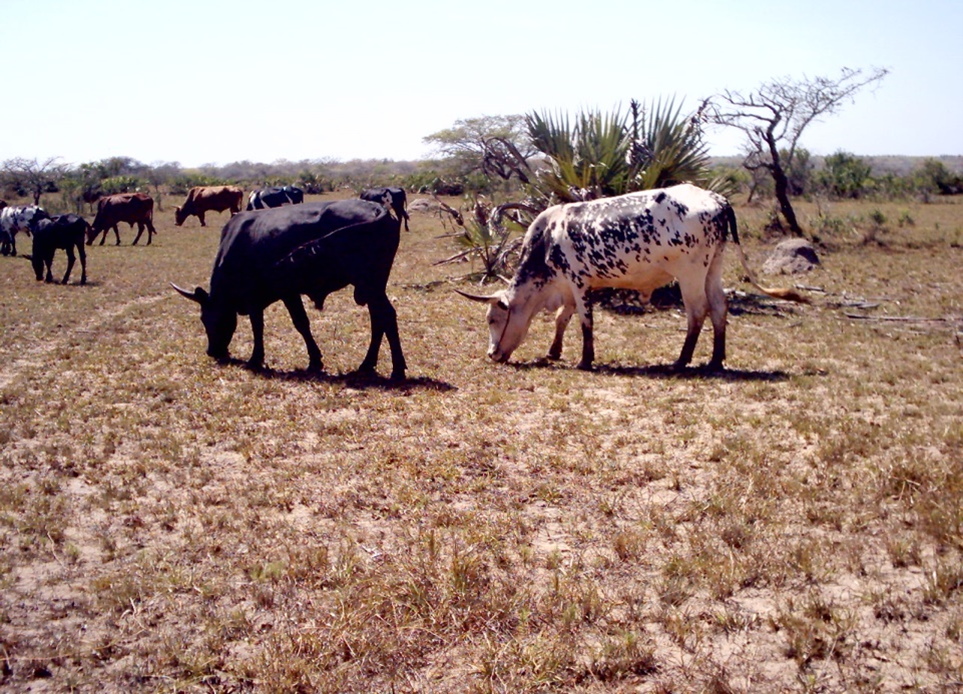 Figure 3.8: Cattle grazing in an area with scarce pasture during the dry season, in Inharrime district, Inhambane province.
- Forage quality
Pastures regrow in October/November, at the start of the rainy season and are palatable until March/April with the protein content being between 70 and 75%, in relation to the other nutritional elements, i.e. during the period of about six months (Owen-Smith, 1982). The nutritive value and palatability reduce progressively until the beginning of the following rainy season, so that during the last months of the dry season the nutritional needs of grazing animals are not met.
- Water availability
The availability of water for livestock is correlated with the thermo-pluviometric pattern and with the number of natural water points (lakes, rivers and natural depressions) and artificial (irrigation channels, small weirs, small reservoirs, excavations, boreholes, wells ). In semi-arid areas, a large number of natural water sources remain without water in the cool and dry season (Timberlake and Reddy, 1996; Timberlake, 1988; PANESA, 1988). Therefore, during the dry season animals depend on water obtained from artificial sources. The intensive use of water from the upstream Limpopo River, particularly in Zimbabwe and South Africa, has exacerbated flow reduction in the Mozambican part of the Basin during the cool and dry season (AFTWR 2007). In some sections, the Limpopo River dries up for periods longer than four months, even in a year of normal rainfall (Timberlake 1988), resulting in a shortage of water for livestock watering.
- Natural pasture management
Cattle breeders interfere in the composition and structure of natural pastures, through management actions. In fact, during the dry season, fires are carried out in order to renew the pasture, reduce tick infestation or other objectives. However, many fires become uncontrolled (Vilela, 2010). The consequences of uncontrolled and frequent fires include the destruction of extensive areas of grazing necessary for the animals, increasing the distance that livestock must travel to meet their food needs. Therefore, there is a reduction in the time available for consumption and there is more energy loss in search of pasture, which reduces the productive and reproductive performance of individuals and herds (Vilela, 2010). However, controlled burnings carried out according to a management plan that considers climatic conditions, herbaceous biomass and density of grazing animals are an important management tool with several positive aspects in the productivity of pastures and livestock.
- Cattle management
The study area integrates the vast region of southern Mozambique, where livestock production is geographically concentrated, being at the base of this distribution, several factors including environmental and other cultural factors. The family sector in livestock is dominant, accounting for most of the production. The labor in livestock is family-run and cattle raising is under extensive grazing, with low inputs, without food supplement even in the most critical times, which means that the cattle are exposed to the effect of climatic extremes, especially to drought.
The animals feed on communal natural pastures during the day and are kept in corrals at night. Veterinary assistance is still deficient and adequate infrastructures for tick baths, vaccinations, etc., are in limited quantities. The yield of livestock production is low, serving only to meet the needs of the breeders themselves, especially the consumption and use of animals as traction force in agriculture or transport of goods.
Analysis of the main constraints of cattle systems and the profile of breeders
Livestock production in the district of Chókwé faces several challenges, highlighting the following: high risk of drought and floods, risk of infestation of cattle by diseases (eg foot-and-mouth disease), gradual reduction of pasture areas due to their conversion to other forms of land use, insufficient capital and availability of inputs, low level of coverage by veterinary extension services, and little research on the dynamics of natural pastures. In the study area, the family sector holds most of the cattle herd. Many families raise cattle in small herds, due to poverty and lack of resources to purchase more animals. For families that own livestock, it has many social, economic and cultural benefits, including consumption, bartering or sale during the years of low agricultural income, animal traction and traditional ceremonies.
Most smallholders have cattle from local breeds of animals that have low production rates but are generally better adapted to local conditions of high temperatures and limited availability of food and water than the more productive exotic breeds.
Vulnerability of pastures to climate change
Considering the available projections on changes in climate variables, compared to the annual average over the last 40 years (INGC, 2009), the potential impacts of climate change on pastures and livestock are presented in table 3.6.
Table 3.6: Assessment of possible impacts of climate change on pasture and livestock
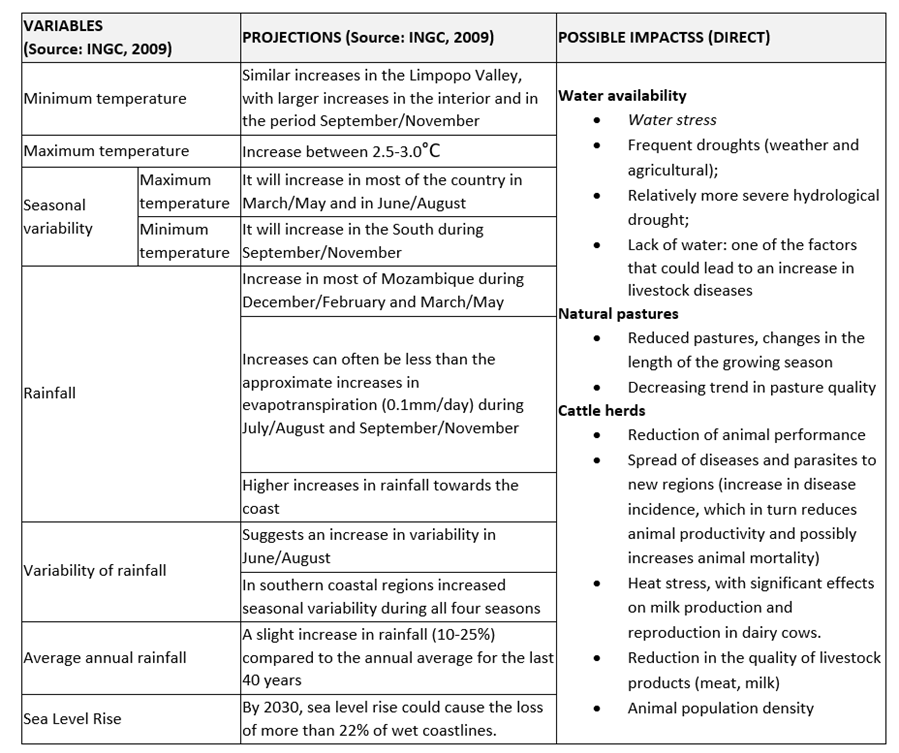
6.2 Fishery
6.3 Food Security and Nutrition
6.4 Water Resources
(From Second National Communication Draft)
Mozambique has abundant natural and water resources that provide great potential for: the production of a variety of crops; the development of livestock, fisheries, aquaculture and tourism; energy production; and industrial growth. However, the high variability of the climate resulting in frequent and recurrent droughts and floods, the limited availability of water resources in the southern part of the country, the high dependence on international water resources and the very limited water management infrastructure make the economy very vulnerable to water shocks, and water posing a constraint to growth and poverty reduction.
The availability of water resources depends on the geographical, climatic and even geological framework. However, for the proper evaluation it is important to categorize these resources taking into account that they can occur in a superficial or underground form.
6.4.1 Surface Water
Climate, orographic and pedological conditions constitute primary factors for the occurrence of surface water. These factors directly influence the flow regime of the Mozambican hydrographic basins, which are very extensive and with a total flow area on the national territory of approximately 2.5 Million km2, 70% of which is contributed by other countries. In Mozambique, 104 hydrographic basins have been identified, of which the majority of the river systems originate in neighbouring countries. Of these basins, 13 are considered major, namely the Maputo, Umbeluzi, Incomati, Limpopo, Save, Buzi, Pungoé, Zambeze, Licungo, Ligonha, Lúrio, Messalo and Rovuma river basins (Table 3.7).
According to Table 3.6, the central region of the country is where the largest hydrographic basin is located - the Zambezi basin - with an area of 1 200 000 km2 , of which 140 000 km2 are within the national territory, and 2 700 km in length of which 820 km are within the national territory. The river system in this Basin flows water from Zambia and Angola, through Zimbabwe and Botswana to its mouth on the Mozambican coast where it flows into a delta of about 7000 km2. The flow of the Zambezi River is estimated at about 16,000 m3/s. Also in the central region is the Save River, which is about 735 km long, 330 km of which in Mozambique and 405 km in Zimbabwe. This basin has an area of about 106 420 km² (22 575 km² in Mozambique and 83 845 km² in Zimbabwe) and flows into Mozambique from west to east, flowing into the Indian Ocean in the coastal area between the provinces of Inhambane and Sofala.
To the north is the Rovuma River basin with an area of 101,160 km2, a narrow river for most of its course, widening only when it reaches the coastal plain. Its main tributaries on the Mozambican bank are: Messinge, Lucheringo and Lugenda. The River Lúrio, which rises from Mount Malema at an altitude of over 1,000 m, is about 1,000 km long, and has a hydrographic basin of 60,800 km2, which is considered to be the largest basin entirely within Mozambican territory.
In the Southern Region, the main water courses are Govuro, Inhanombe, Limpopo, Incomati, Umbeluzi, Tembe and Maputo. The Limpopo, Incomati, Umbeluzi, Tembe and Maputo rivers originate in neighbouring countries and cross the Libombos Mountains reducing the hydric capacity forming flood plains.
Table 3.7: List of some major river basins of Mozambique
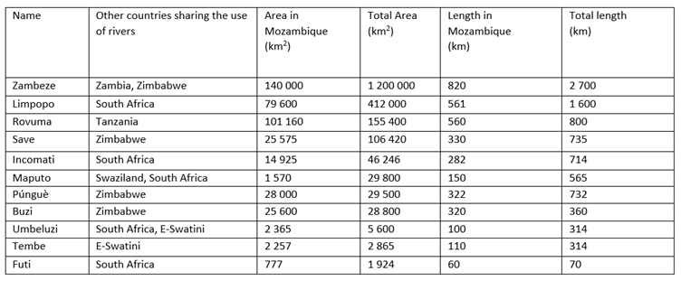 Source: MICOA, 2007
Still within the context of surface waters, lakes constitute one of the important reservoirs of surface water. Mozambique has about 1,300 lakes of various sizes spread throughout the territory. Of these, Lake Niassa is the largest of all and is located in the province of the same name. It is a lake of tectonic origin, associated to the East African Rift system. This lake has a total surface area of 31 thousand km2, of which 20% belongs to the national territory. Besides this lake, the country has other natural and artificial lakes resulting from river dams. Among the artificial lakes, the Cahora Bassa lake stands out. It is located in Songo District, in Tete Province and covers an area of approximately 2,739 km2.
In the country, flooding has been the impact of climate change recorded in rainy season balances for river basins (Table 3.8)
Table 3.8: River basins that have experienced flooding in rainy seasons and human impact
However, the reduction in water availability is beginning to be noticeable.
6.4.2 Groundwater
6.5 Health
6.6 Energy
(From Second National Communication Draft)
Mozambique has enormous energy resources that are still unexplored, including coal and natural gas, water potential, renewable resources such as solar, wind, water, geothermal, ocean and forest and agricultural biomass sources (ME, 2011). At the same time, the country is one of the countries with the lowest levels of energy consumption in Southern Africa, with around 80% of the country’s energy consumption based on biomass (firewood and charcoal) and around 17% of the population with access to electricity (ME, 2011).
Access to energy is a sine qua non condition in the fight against poverty, as it is a means that intervenes in all key sectors of development, whether water, health, food refrigeration, lighting, and domestic heating, transport, agriculture, industrial production or even modern means of communication (Sebastião, 2013). In order to realize one of the national development objectives, the President of the Republic launched in November 2018 the Programme “Energy for All by 2030.” This Programme aims to intensify access to electricity for more households and businesses nationally, as a contribution to Mozambique’s universal electrification by 2030, defined in the National Electrification Strategy (ENE), approved by the Council of Ministers on 16 October 2018. The Project will support the expansion of power access to peri-urban and rural areas across the country by leveraging and extending the existing national electricity grid and deploying mini-grids on the basis of solar generation in areas not covered by the national grid.
INGD’s rainy season balance reports show that the power sector has been affected by extreme events that occur in the country, particularly strong winds, tropical cyclones, floods and inundations (Table 3.13).
Table 3.13: Impacts of extreme events on the energy sector
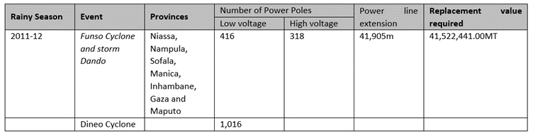
Extreme weather events have resulted in the destruction of privately and publicly owned solar panels. One of the examples is the destruction of 11 solar panels providing electricity to a health house in Mossuril district, Nampula province, during the passage of cyclone Jokwe in Mossuril district.
6.7 Infrastructure
6.8 Coastal Zones
6.9 Biodiversity
(From Second National Communication Draft)
Biodiversity represents a vital pillar for the development of Mozambique and for the livelihood of the majority of the population of this country (MITADER, 2015). The country has 4 important natural ecosystem groups: (i) terrestrial ecosystems, (ii) marine and coastal ecosystems, (iii) inland water ecosystems and (iv) coastal ecosystems. These encompass a considerable biological diversity estimated at over 6,000 plant species and 4,200 animal species (3,075 insects, 726 birds, 214 mammals, 171 reptiles and 85 amphibians). There is also considerable potential for agro-livestock production and diversity, which is distributed in 10 agro-ecological zones. In terms of coastal and marine biodiversity, 194 species of coral, 9 species of mangrove plants, 13 species of marine meadows, 5 species of turtles, 18 species of marine mammals (7 species of dolphins, 8 species of whales, 2 species of seals and 1 species of dugong), 2,626 species of sea fish (800 species associated with coral reefs, 92 cartilaginous fish) and 1,363 species of molluscs are recorded. The biodiversity of inland waters is equally recognized, notably Lake Niassa and the Zambezi Delta (MITADER, 2015).
In order to contribute to curbing the current trend of biodiversity loss and degradation in Mozambique, and to ensure that in resilient and healthy ecosystems, sustainability in the use of its components and the benefits generated contribute to sustainable national development, the Government has formulated a Strategy and Action Plan for the Conservation of Biological Diversity in Mozambique 2015 - 2035. This recognises that one of the main causes of the threat to biodiversity is climate change, due to its potential to cause species extinctions, alter their spatial and temporal distribution and change fundamental biogeochemical and ecological processes. The Strategy acknowledges that there is little knowledge about the consequences of climate change on biological diversity in the country. However, it identifies the following: the alteration and/or loss of ecosystems (mainly vulnerable ones, such as mangroves, corals, marine meadows, mountainous ecosystems, flooded savannas, etc.) and, consequently, the well-being of populations that depend on the goods and services provided by ecosystems.
Regarding coastal and marine ecosystems, the effects of climate change are estimated to result in the alteration of marine biodiversity by warming of the water column and acidification, leading to coral bleaching and death (MITADER, 2018). Currently, coral reefs of the coast of Mozambique are recovering from the losses that occurred in 1988 due to the bleaching phenomenon induced by increases in sea temperature caused by the El Niño Southern Oscillation (ENSO) phenomenon (MICOA, 2014).
It should be noted that the impacts of climate change on some components of biodiversity have already been considered. In the section on fisheries, the effect of changes in climatic variables on the quality of marine and coastal habitats was described. In the section on pastures and livestock, the effect of drought on natural pastures was analyzed, which are the source of food not only for cattle, but also for wild herbivores, which in turn sustain wild carnivores. The main adaptive response of mobile organisms to climate change and reduced availability of resources and degradation of habitat conditions is movement to areas where there are adequate resources and conditions.
In the agriculture section, the effect of low agricultural productivity caused by drought on deforestation was discussed, which results in loss of specimens, fragmentation of ecosystems and loss of connectivity in the landscape. Fragmentation blocks the movements of organisms to access resources and conditions suited to their physiological needs, but it also blocks the flow of genes between sub-populations, reducing their genetic vigor and resilience to climate change. In the section on forests, in addition to deforestation, potential changes in species composition in forests due to climate change were discussed.
Extreme weather events affect the long-term viability of biodiversity conservation areas. On the one hand, low productivity in agriculture and livestock caused by extreme weather events, contributes to increased poverty and vulnerability of the rural population, which results in increased pressure on species and natural habitats to obtain livelihoods, causing loss of biodiversity. On the other hand, the sustainable use of biological resources is a climate change adaptation strategy, because it is a means of livelihood for families that lose their primary sources of livelihood due to extreme weather events. Therefore, the loss of biodiversity will exacerbate poverty.
6.11 Social Protection
(From Second National Communication Draft)
According to ENAMMC, the effects of climate change have unequal consequences, affecting more heavily the most vulnerable groups, namely women, children, the elderly, people with disabilities, displaced people and the chronically ill. Poor people often depend on sectors that are highly susceptible to extreme weather (eg agriculture) and live in vulnerable areas and homes (World Bank, 2017). Climate change will make poor people poorer and poorer. Therefore, sectoral climate change adaptation programs or multi-sectoral initiatives should prioritize the poorest, most vulnerable people in order to increase their resilience to climate shocks. Women and girls are among the groups most affected by poverty. In rural areas, these are the main practitioners of agriculture to ensure food security for the family and are responsible for fetching water and woodfuel for domestic use. Climate change will reduce agricultural productivity, availability of water and firewood, which will exacerbate women’s poverty and vulnerability. In this context, social protection measures, focusing on the most vulnerable social groups, will reduce the level of poverty and strengthen adaptation to climate change.